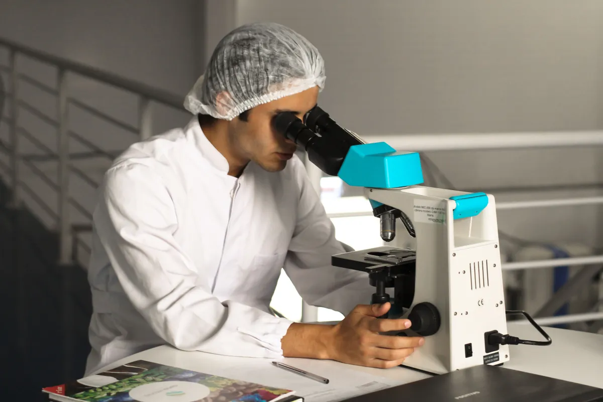

Science, Technology, Engineering, and Mathematics are intertwining disciplines when applied in the real world. The difference of the STEM curriculum with the other strands and tracks is the focus on advanced concepts and topics.
Under the track, you can become a pilot, an architect, an astrophysicist, a biologist, a chemist, an engineer, a dentist, a nutritionist, a nurse, a doctor, and a lot more. Those who are also interested in Marine Engineering should take this track.
| Monday | Tuesday | Wednesday | Thursday | Friday |
|---|---|---|---|---|
| Homeroom J. Manalo (8-8:30AM) |
||||
| Earth Science T. Rose (9-9:30AM) |
Komunikasyon at Pananaliksik E. Aguinaldo (9:10-9:45AM) |
General Mathematics (makeup class) M. Patig (9:10-9:45) |
Physical Education G. Galvez (9:10-9:45AM) |
|
| General Mathematics M. Patig (10-10:30AM) |
Pre Cal C. Villanueva (10-10:30AM) |
|||
| Homeroom J. Manalo (11-11:30AM) |